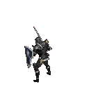
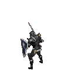

Sobre mi
Buenas mi nombre es Cristian Fernández Cornejo y socorrista de dia y informatico de noche.
¿Que hago en mis ratos libres?
Suelo jugar al cs2, elden ring, gta5 y league of legends lo he dejado por temas de salud tanto mentales como físicos.
¿Como dejaste el league of legends?
El principal motivo fue el vanguard, el vanguard es un "anticheats" que el principal problema es que es muy intrusivo en el sistema operativo, hace capturas a tu pc sin tu permiso, tiene acceso a demasiadas cosas de tu sistema operativo, y si no esta ejecutado al iniciar el sistema este no te permitira jugar al videojuego.